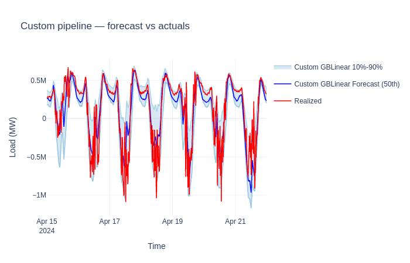

Building a Custom Pipeline#
The create_forecasting_workflow preset handles pipeline assembly
automatically. When you need full control — custom transforms, different
feature engineering, or non-standard postprocessing — you can build a
ForecastingModel from individual components.
What you’ll learn:
Assemble preprocessing, forecaster, and postprocessing into a pipeline
Select and configure individual transforms
Train and predict with a hand-built pipeline
Compare the custom pipeline against a preset
Note
This tutorial is for advanced users who need to go beyond presets. Start with Forecasting Quickstart for the standard approach.
Key API references:
ForecastingModel
· TransformPipeline
· GBLinearForecaster
Load the dataset#
from datetime import timedelta
from openstef_core.testing import load_liander_dataset
from openstef_core.types import LeadTime, Q
dataset = load_liander_dataset()
from datetime import datetime
train_start = datetime.fromisoformat("2024-03-01T00:00:00Z")
train_end = train_start + timedelta(days=45)
forecast_end = train_end + timedelta(days=7)
train_dataset = dataset.filter_by_range(start=train_start, end=train_end)
predict_dataset = dataset.filter_by_range(
start=train_end - timedelta(days=14),
end=forecast_end,
)
print(f"Training: {train_dataset.data.shape[0]:,} rows")
print(f"Predict: {predict_dataset.data.shape[0]:,} rows")
Training: 4,320 rows
Predict: 2,016 rows
Define pipeline components#
A ForecastingModel has three stages:
Preprocessing — feature engineering and data cleaning transforms
Forecaster — the model that produces predictions
Postprocessing — transforms applied to the forecast output
Below we build each stage explicitly.
Preprocessing#
We select transforms from the available modules:
Module |
Transforms |
|---|---|
|
Scaler, Imputer, NaNDropper, OutlierHandler, EmptyFeatureRemover |
|
HolidayFeatureAdder, DatetimeFeaturesAdder, CyclicFeaturesAdder, LagsAdder |
|
AtmosphereDerivedFeaturesAdder, DaylightFeatureAdder, RadiationDerivedFeaturesAdder |
|
WindPowerFeatureAdder |
|
CompletenessChecker, FlatlineChecker |
from openstef_core.mixins import TransformPipeline
from openstef_models.transforms.general import EmptyFeatureRemover, Imputer, NaNDropper, Scaler
from openstef_models.transforms.time_domain import CyclicFeaturesAdder, HolidayFeatureAdder
from openstef_models.transforms.time_domain.lags_adder import LagsAdder
from openstef_models.utils.feature_selection import Exclude
quantiles = [Q(0.1), Q(0.5), Q(0.9)]
horizons = [LeadTime.from_string("PT36H")]
preprocessing = TransformPipeline(
transforms=[
# Feature engineering
LagsAdder(
history_available=timedelta(days=14),
horizons=horizons,
add_trivial_lags=False,
target_column="load",
custom_lags=[timedelta(days=7)],
lag_fallback_offset=timedelta(days=7),
),
CyclicFeaturesAdder(),
HolidayFeatureAdder(country_code="NL"),
# Standardization
Scaler(selection=Exclude("load"), method="standard"),
EmptyFeatureRemover(),
# Missing value handling
Imputer(selection=Exclude("load"), imputation_strategy="mean"),
NaNDropper(selection=Exclude("load")),
]
)
print(f"Preprocessing steps: {len(preprocessing.transforms)}")
for t in preprocessing.transforms:
print(f" - {type(t).__name__}")
Preprocessing steps: 7
- LagsAdder
- CyclicFeaturesAdder
- HolidayFeatureAdder
- Scaler
- EmptyFeatureRemover
- Imputer
- NaNDropper
Forecaster#
We use GBLinearForecaster — a gradient-boosted linear model that works well
with the Imputer + NaNDropper preprocessing pattern above.
from openstef_models.models.forecasting.gblinear_forecaster import (
GBLinearForecaster,
GBLinearHyperParams,
)
forecaster = GBLinearForecaster(
quantiles=quantiles,
horizons=horizons,
hyperparams=GBLinearHyperParams(
n_steps=100,
learning_rate=0.3,
),
verbosity=0,
)
Postprocessing#
We add a QuantileSorter (ensures quantile ordering) and a
ConfidenceIntervalApplicator (adds confidence interval columns).
from openstef_models.transforms.postprocessing import (
ConfidenceIntervalApplicator,
QuantileSorter,
)
postprocessing = TransformPipeline(
transforms=[
QuantileSorter(),
ConfidenceIntervalApplicator(
quantiles=quantiles,
add_quantiles_from_std=False,
),
]
)
Assemble the model#
ForecastingModel combines all three stages. We wrap it in a
CustomForecastingWorkflow which adds train/predict orchestration.
from openstef_models.models.forecasting_model import ForecastingModel
from openstef_models.workflows import CustomForecastingWorkflow
model = ForecastingModel(
preprocessing=preprocessing,
forecaster=forecaster,
postprocessing=postprocessing,
target_column="load",
)
workflow = CustomForecastingWorkflow(
model_id="custom_pipeline_demo",
model=model,
callbacks=[],
)
Train and predict#
result = workflow.fit(train_dataset)
forecast = workflow.predict(predict_dataset, forecast_start=train_end)
print(f"Forecast rows: {len(forecast.data)}")
print(f"Columns: {list(forecast.data.columns)}")
Forecast rows: 672
Columns: ['quantile_P10', 'quantile_P50', 'quantile_P90', 'load', 'stdev']
Visualize the result#

Using components individually#
ForecastingModel is convenient, but every component also works on its
own. You can run the preprocessing pipeline, inspect intermediate data,
and call the forecaster directly.
Run preprocessing on raw data#
preprocessed = model.preprocessing.transform(train_dataset)
print(f"Before preprocessing: {train_dataset.data.shape[1]} columns")
print(f"After preprocessing: {preprocessed.data.shape[1]} columns")
print(f"\nAdded features: {sorted(set(preprocessed.data.columns) - set(train_dataset.data.columns))[:8]}...")
Before preprocessing: 28 columns
After preprocessing: 49 columns
Added features: ['day_of_week_cosine', 'day_of_week_sine', 'is_ascension_day', 'is_christmas_day', 'is_easter_monday', 'is_easter_sunday', 'is_good_friday', 'is_holiday']...
Run a single transform#
single_transform = CyclicFeaturesAdder()
single_transform.fit(train_dataset)
result_single = single_transform.transform(train_dataset)
print(
f"CyclicFeaturesAdder added {len(single_transform.features_added())} columns: {single_transform.features_added()}"
)
CyclicFeaturesAdder added 8 columns: ['time_of_day_sine', 'season_sine', 'day_of_week_sine', 'month_sine', 'time_of_day_cosine', 'season_cosine', 'day_of_week_cosine', 'month_cosine']
Call the forecaster directly#
After preprocessing, you can pass the data to a ForecastInputDataset
and call the forecaster directly.
This is useful for debugging or integrating into custom workflows.
from openstef_core.datasets import ForecastInputDataset
# Preprocess the prediction data
preprocessed_predict = model.preprocessing.transform(predict_dataset)
# Convert to ForecastInputDataset (what the forecaster expects)
forecast_input = ForecastInputDataset(
data=preprocessed_predict.data,
sample_interval=preprocessed_predict.sample_interval,
target_column="load",
forecast_start=train_end,
)
# Call the forecaster directly
raw_forecast = model.forecaster.predict(forecast_input)
print(f"Raw forecast shape: {raw_forecast.data.shape}")
print(f"Raw forecast columns: {list(raw_forecast.data.columns)}")
Raw forecast shape: (672, 3)
Raw forecast columns: ['quantile_P10', 'quantile_P50', 'quantile_P90']
Next steps#
Ensemble Forecasting — combine your custom pipeline with other models into an ensemble for better accuracy.
Quantile Calibration — append isotonic calibration to your postprocessing for more reliable confidence intervals.